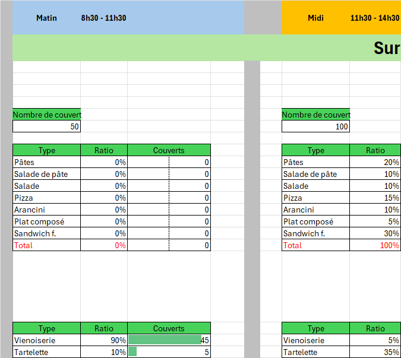
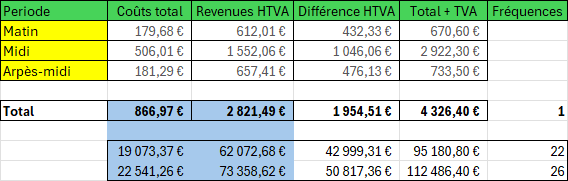
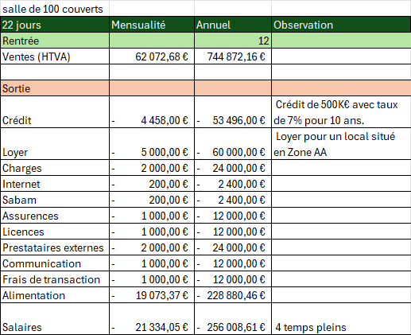
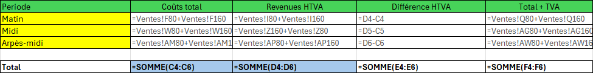

Excel — Modèle 01
Modèle de rentabilité — 100 couverts
Exercice de modélisation financière : construire un modèle de rentabilité prévisionnelle pour une salle de 100 couverts, décliné en trois scénarios d'activité (22, 26 et 30 jours ouvrés par mois).
Contexte
L'objectif de l'exercice était de chiffrer une journée type d'activité (matin, midi, après-midi) et de mesurer la sensibilité du résultat au nombre de jours d'ouverture par mois. Le modèle relie les données de fréquentation, le coût matière des recettes, la grille de ventes et les charges d'exploitation.
Méthode
Le classeur regroupe plusieurs blocs liés par des formules :
- paramètres d'ouverture : horaires, couverts par tranche et ratios de fréquentation ;
- catalogue de recettes et coût matière par plat, à partir de prix fournisseurs sourcés ;
- grille de ventes par tranche horaire et par produit ;
- masse salariale et planning de présence ;
- charges fixes et service de financement ;
- synthèse des résultats par période et par scénario.

Résultat
Les tableaux ci-dessous reprennent les totaux de synthèse du modèle.
| Période | Coûts totaux | Revenus HTVA | Différence HTVA | Total + TVA |
|---|---|---|---|---|
| Matin | 179,68 € | 612,01 € | 432,33 € | 670,60 € |
| Midi | 506,01 € | 1 552,06 € | 1 046,06 € | 2 922,30 € |
| Après-midi | 181,29 € | 657,41 € | 476,13 € | 733,50 € |
| Total | 866,97 € | 2 821,49 € | 1 954,51 € | 4 326,40 € |
Scénarios d'activité
| Scénario | Coûts totaux | Revenus HTVA | Différence HTVA | Total + TVA |
|---|---|---|---|---|
| 22 jours | 19 073,37 € | 62 072,68 € | 42 999,31 € | 95 180,80 € |
| 26 jours | 22 541,26 € | 73 358,62 € | 50 817,36 € | 112 486,40 € |
| 30 jours | 26 009,14 € | 84 644,56 € | 58 635,42 € | 129 792,00 € |

Charges et résultat
La feuille de résultat détaille les charges d'exploitation et le service de financement retenus pour chaque scénario. Ces éléments restent en capture d'écran.

Formules
Vue du modèle avec les formules affichées, pour montrer la construction des calculs et les liaisons entre les feuilles.

Ce que cela démontre
Maîtrise de la modélisation financière : construction d'un modèle complet, de la donnée fournisseur au résultat consolidé, et analyse de sensibilité par scénarios d'activité.